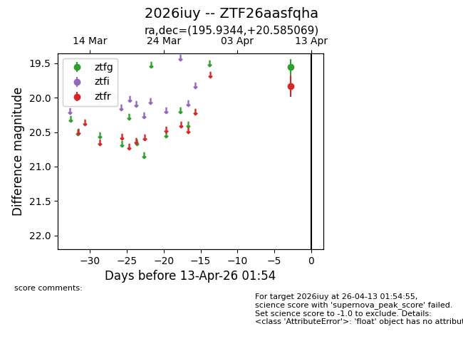
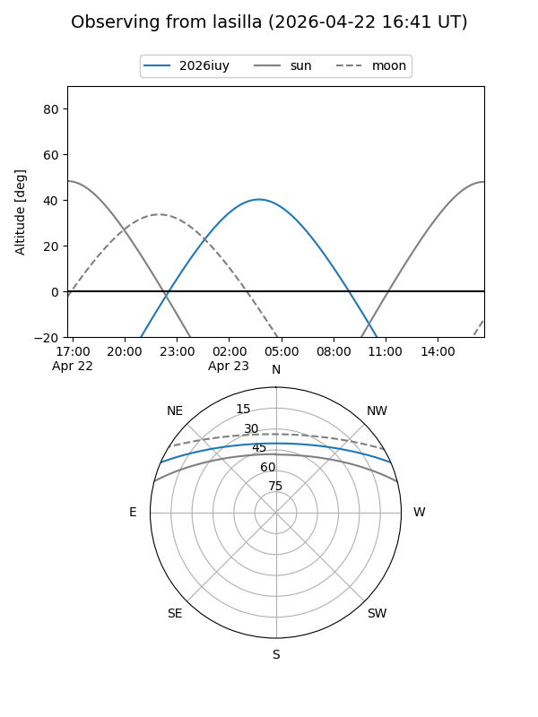
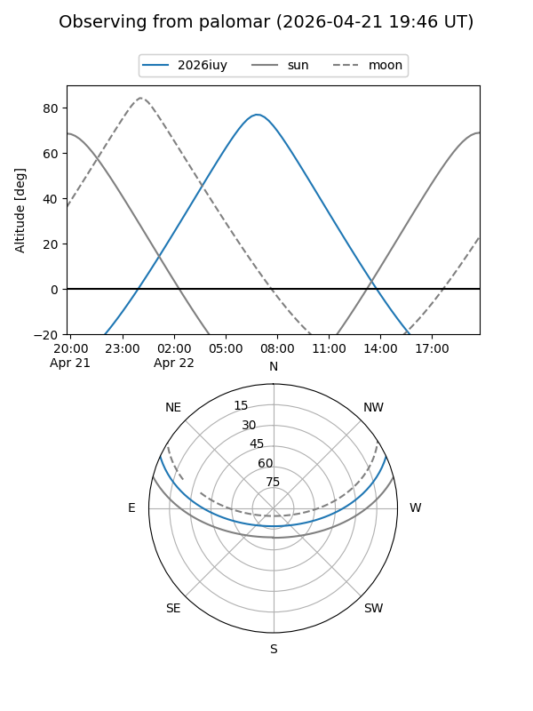

2026iuy
Target 2026iuy at 2026-04-13 02:07
Aliases and brokers:
FINK: link
Lasair: link
ALeRCE: link
TNS: link
YSE: link
alt names
ZTF26aasfqha (ztf,fink_ztf)
2026iuy (tns,yse)
Coordinates:
equatorial (ra, dec) = 195.9344,+20.58507
equatorial (HMS+DMS) = 13:03:44.26,+20:35:06.25
galactic (l, b) = (326.8288,+82.87906)
Flags:
Photometry:
last ztfg=19.56, ztfr=19.83
1 ztfg, 1 ztfr detections
Lightcurve

Visibility


Additional plots